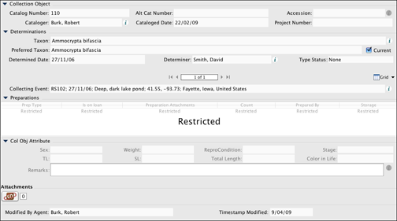
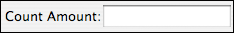
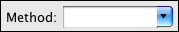
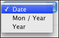
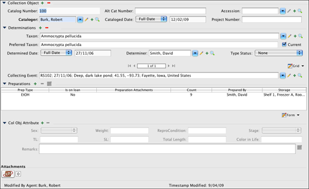

A form is a window in which data can be viewed, entered, or edited. Specify categorizes forms as Data forms, which are used to enter collection data, and Interactions, which are used to record transactions of either data or collection objects. Each discipline has access to a set of forms for both data and interactions, specific to their discipline. The following sections describe basic concepts for using the form system. A separate section of help exists for both Data and Interactions forms.
Note: At this time, Specify 6 does not include a Form Editor, as was found in Specify 5. It is important to note that the forms have been created programmatically to be extremely flexible and can be exported as xml and either edited by on-site staff or emailed to the Specify staff. The original forms should not be edited from the hard drive, they must be exported and then reimported! Forms are exported via the Importing/Exporting tool, which exports an entire form set. Form sets reside at the Discipline level in Specify, which means that all Collections within a Discipline access the same forms, but form sets can then be reimported at any institutional level. For instance, the default form set for a discipline could be exported, edited, and reimported at a collection level, allowing all users in that collection to use the new set of forms. If you wish to have a member of the Specify team edit the form, and have an ISA with Specify, please contact them at specify@ku.edu.
The names of tables and fields used for display within Specify, (labels), can be edited using the Schema Configuration tool.
Specific forms have been created for each of the operating systems. These include varying font sizes as well as static versus stretchy forms. The form layout can be chaged in the user preferences:
Specify includes extensive controls for limiting access to data for each user. When starting up, Specify reads the permissions for the user based on their login information, then loads the correct tables and tools based on these permissions. For this reason, some of the controls and/or data may not be available. For example, users that belong to the Guest group and only have permission to view tables and forms will not have access to data through the Data module. They must first Query to find records, then view the data in a form.
Also, if a user has permission to view forms, but does not have permission to view a particular table or tables included within the form, they will be advised that the data is restricted. For instance, in the example below the user has permission to view a Collection Object form, but not a Preparations form. When opened the Preparations will sub form inside the does not have permission to view any Preparations data, but they do have View permission for both the form system and Collection Object table.

Form with Restricted sub form
Restricted Data
The default permissions that Specify ships with allow Guest users to View the forms, but not modify, add or delete them. All other users can use forms in their entirety.
Forms are categorized for the data that resides in each table (Collection Object, Taxon, Geography, etc.); however, much of the data within the tables is also linked to related tables. This prevents users from needing to retype the same information and assures that information is entered only one way (for example John Smith is not also entered as J. Smith or John Smyth). Separating data into fields within tables with relationships also allows data to be searched in a more precise way.
A relationship involving a primary and related table in which many primary records are linked to a single related record in the related table is referred to as having a many-to-one relationship. For example, many Collection Object records might be linked to the same Locality record because the specimens were all found at the same location.
Related tables with a many-to-one relationship to the primary table are represented on the form as a formatted field with buttons to edit, add and search for a record within the table. The field format typically consists of one primary field within the table, but may be represented by more than one field typically separated by a comma.
A relationship involving a primary and related table in which a single primary record links to many related records in the related table is referred to as a one-to-many relationship. For example, several Collection Object records would be linked to a single record in the Collection Event table because all the specimens were collected during the same event.
Related tables with a many-to-one relationship display on a form as a Query Combo Box. Control buttons next to the Query Combo Box;
src="../../images/Edit-2-16x16.png" alt="a" width="16" height="16"> (edit),Related tables with a one-to-many relationship to the primary table are included on the form as a sub form with navigation controls.
Data is added and edited in sub forms the same way that it is added and edited to forms. Boxes are used in the same way and required fields have a bold label.
Specify's forms use a variety of boxes, buttons, and panels to enter and display data, called controls.
| Button | Definition | Result |
| Incomplete | Opens a dialog listing the incomplete fields that are required. Note: The shield only appears once a change has been made inside the form and will disappear once all required fields contain data. |
|
| Warning | Opens a dialog listing fields with incorrect data. Note: The shield will only display when fields on a form contain incorrect data. |
|
| Collapse | Hides the form/sub form. | |
| Expand | Opens the form/sub form. | |
| Add | Opens a new form or sub form to adds a new record. | |
| Delete | Deletes the record. A Collection Object can not be deleted if it links to any other records. | |
| Edit | Opens the related record in a sub form. | |
| Search | Opens a search dialog to search for a record. Fields for the table will be available to search, but this search is not inclusive of criteria; it treats all criteria independently. For example; when searching for an agent 'John Smith', entering 'John' into the first name field and 'Smith' into the last name field will return results for all last names of 'Smith' and all first names of 'John' rather than limiting the search to only 'John Smith'. | |
|
Information | Opens the associated form. |
|
View Form | Displays the table as a form for view only. |
| View Grid | Displays the table as a grid for view only. | |
| Edit Form | Displays an editable table in form view. | |
| Edit Grid | Displays an editable table in grid view. |
Main Form Control

Navigation Control is found at the bottom of each form. Navigation is also present on sub forms that are part of the main form, but only when viewed as a Form, not as a Grid.

Step through records by clicking on the appropriate arrow (first, previous, next, last) or choose Data > (first, previous, next, last), or press the spacebar when the appropriate button is in focus.
Number Box

Number boxes accept any numerical input. Simply click in the box or use the tab key to apply focus in the box, then type in the numerical data. The box will not accept characters.
Text Box

Text boxes accept any type of input. Simply click in the box or use the tab key to apply focus in the box, then type in the data.
Note: To change the length of a Text and/or Number Box choose System > Schema Configuration.
Query Combo Box

A Query Combo Box represents a many-to-one relationship with another record in another table. Data for each record in the table is formatted to display enough fields within the table for the desired record to be recognized within a list of records. A Query Combo Box used to represent the Taxon (shown above), Geography, Storage, Lithostratigraphy and Chronostratigraphy tables will use the format for the Full Name, which is configured in the Taxon Tree Definition. All other tables are formatted using the Schema Configuration tool.
The Query Combo Box allows data to be searched and chosen from a related table, not typed directly into the box. Data chosen from the list links the current record with a record in a related table. This eliminates the need to retype data. It is possible to type data directly into the box, but the box will not accept the data; the data must first be added to the table by clicking the  (add) button and creating a new record.
(add) button and creating a new record.
Choose data from a list:
Note: Type more letters into the box to reduce the results and expedite the search.
Search for existing data (these buttons are not available with keystroke entry):
Enter a new record:
Or edit an existing record:
Combo Box

Combo boxes are used to display Pick Lists, which allow data to be chosen from a predefined set of options, not typed directly into the box.
Note: Edit/add options to these lists in the Pick List Editor at System > Collection Setup > Configuration. Then click on the Pick List Editor button on the side bar and refer to the directions for the Pick List Editor. Preparation Type can be edited by clicking the Preparation Type icon on the same side bar.
Text Combo Box

Text combo boxes are used to display Pick Lists which are created from entered data.
Or
Note: A Pick List can be changed from a Combo Box to a Text Combo Box or vice versa in the Pick List Editor at System > Collection Setup > Configuration.
Date Field

Date fields require a formatted date and give a prompt for the accepted format.
Type the date as shown in the box.
Remarks Field

The Remarks field is a text field, typically 4096 characters in length. Text can be typed directly into the text box on the form, or for a larger text box of text click the  edit button, which will open a sub form for entering text.
edit button, which will open a sub form for entering text.
Other Date Fields
Date Type/Partial Dates

Click the combo box for date type options.
Collecting Event Start, Collecting Event End, Cataloged Date, Determination Date and Preparation Date can be entered as partial dates by clicking on the Date combo box and choosing one of the partial date types from the list.

* Partial dates need to be stored as valid dates in the database (as day, month and year); therefore, Specify will use 01 for any missing data. For example, a partial date that displays as 07/2007 is stored in the database as 01/07/2007 and a partial date of 2007 is stored in the database as 01/01/2007. Therefore; if an exact date of 01/01/2007 is queried the partial date (2007) will be included in the return data.
Cataloged Date
In most Collection Object forms the Cataloged Date is editable, but if it is left blank it is automatically set to the current date upon saving the record.
Cataloger
In most Collection Object forms, the Cataloger field is editable in the first new record, then automatically added and not editable in any additional forms created by clicking the add ( ) button. To enter a new Cataloger simply click the Data Entry icon in the Taskbar to open a new Collection Object form.
) button. To enter a new Cataloger simply click the Data Entry icon in the Taskbar to open a new Collection Object form.
Formatted Number Fields
Any string can be formatted to a numbering scheme in System > Schema Configuration. Typical fields that are formatted with a numbering scheme are Catalog Number, Accession Number, Loan Number and Gift Number. Once these fields are formatted, they can either be entered manually or auto increment using Auto Numbering.
Note: When manually entering a formatted number field, it is paramount that numbers be padded with 0's. For example, if 3 numbers are available in a numbering scheme (###) and the desired number is 1, then 001 must be entered. If only 1 is entered, then Specify will read this as 100. This will produce incorrect results in searches, queries and reports.
Timestamp Modified
Timestamp Modified is found at the bottom of the Collection Object form for most Disciplines, and is the date the . This is not an editable field on a form but it is important to note that it is a searchable field.
Data Entry Fields
Fields that accept data are Data Entry fields. These fields may also be required.
View Fields

Fields that are View only (not editable) automatically load pre-determined information. Examples of these fields are the Collection Name field in the Collection Object form and the Children fields in the Geography, Taxon, Storage, Lithostratigraphy and Chronostratigraphy tables which are also displayed/edited as Trees.
Required Fields

Fields that are required have a bold label and text areas that are shaded blue (shown in the above Query Combo Box). Records can not be saved (the save button for the form will not become enabled) until all required fields contain proper data. A (incomplete information) button will appear at the bottom of any form with incomplete required fields. Click the button for a list of these fields.
Note: The shaded color can be changed in Specify Preferences.
Specify adopts the standard keyboard functions for filling out forms via keyboard entry. Examples of keyboard strokes for the form controls are described in the control section. The following are a few guidelines:
Tab moves the focus to the next field.
Spacebar activates a button.
Down-arrow ( ) opens a combo box and moves focus to the next item in the box.
) opens a combo box and moves focus to the next item in the box.
Esc. (escape key) closes a combo box.
Return selects a highlighted item within a list.
Cntl + S will save a record or Query.
Specify 6 allows values in specific fields to be copied from the current record into new records using Carry Forward.
To use Carry Forward
Carry Forward automatically turns on after being Configured.
When Carry Forward is already configured it can be turned on by choosing Data > Carry Forward or right-button clicking within the form and choosing Carry Forward in the context menu. A checkmark will appear next to the name Carry Forward in both the drop-down and context menu.
To disable Carry Forward choose Data > Carry Forward or right-button click within the form and choose Carry Forward in the context menu. The checkmark will disappear from both the drop-down and context menu.
Note: When Carry Forward is disabled in the Data or context menu it will need to be Configured before becoming enabled.
Sub forms that represent a one-to-many relationship to the primary table do not carry forward EXCEPT the Determinations table for Collection Objects, Collectors for Collecting Events and Citations for Collection Objects. These three will carry forward all the associated records. For example: if a Collection Object has 6 Determinations associated with it and Carry Forward is enabled all 6 of the Determinations will carry forward into the new record.
Note: fields that are check boxes, or use an auto-formatter will not carry forward. However, auto-formatted fields will still update using Auto Numbering. For instance, Catalog Number is a field that is always formatted for a numbering scheme. If the Catalog Number (C#)is 1234 and Carry Forward is turned on but Auto Numbering is turned off then the the next record will not include a C# (one will need to be entered manually). If the C# is 1234 and Carry Forward and Auto Numbering are both turned on then the next record added will include a C# of 1235.
Fields that have been formatted for a numbering scheme automatically increment their numbering scheme using Auto Numbering. These are typically the Catalog, Accession, Gift and Loan Number fields, but any field that is a string can be formatted using the Schema Configuration tool (System > Schema Configuration). Forms open with Auto Numbering on. Turn off off Auto Numbering by clicking Data > Auto Numbering.
Once Auto Numbering is turned off it will stay off until the Workspace window is closed; however, new windows will open with Auto Numbering turned on. For instance, if a Collection Object (CO) form is opened and Auto Numbering is turned off it will remain off while new CO's are entered using the same window. If a new CO form is opened in a new window (creating a new tab) it will open with Auto Numbering turned on.
When Auto Numbering is not on, formatted numbers must be manually assigned. This is useful when entering legacy data. When manually entering a formatted number field, it is paramount that numbers be padded with 0's. For example, if 3 numbers are available in a numbering scheme (###) and the desired number is 1, then 001 must be entered. If only 1 is entered, then Specify will read this as 100. This will produce incorrect results in searches, queries and reports.
As in Specify 5, Specify 6 works with a bar code reader. Specify treats the bar code reader as an ordinary data entry device. No special configuration within Specify is necessary. Refer to your bar code reader documentation for instructions on how to install and configure the bar code reader. Once the bar code reader is successfully installed and configured, it should work automatically in Specify 6.
Records that are related, or linked, to other records can not be deleted. For example, a Preparation that is linked to specific Collection Objects can not be deleted while the link and/or Collection Object exists. To delete the Preparation, first edit each Collection Object record and remove the Preparation.
When related records are edited, the data changes in each record that references that data. For example, if the spelling of a name in the Last Name field is changed in the Agent record, the spelling will also change in the Deaccession Agents, Loan Agents, Authors and other records.
Note: Only users with add and edit privileges will be offered the add and edit button on their form.
Multiple records can be entered within a single tab in Specify. Records can also be deleted from within that original tab. Once the original tab has been closed the record will need to be searched and reopened within a form to delete it from the database. The following example shows the steps to delete a Collection Object record with Catalog Number 100.

Edit Collection Object form